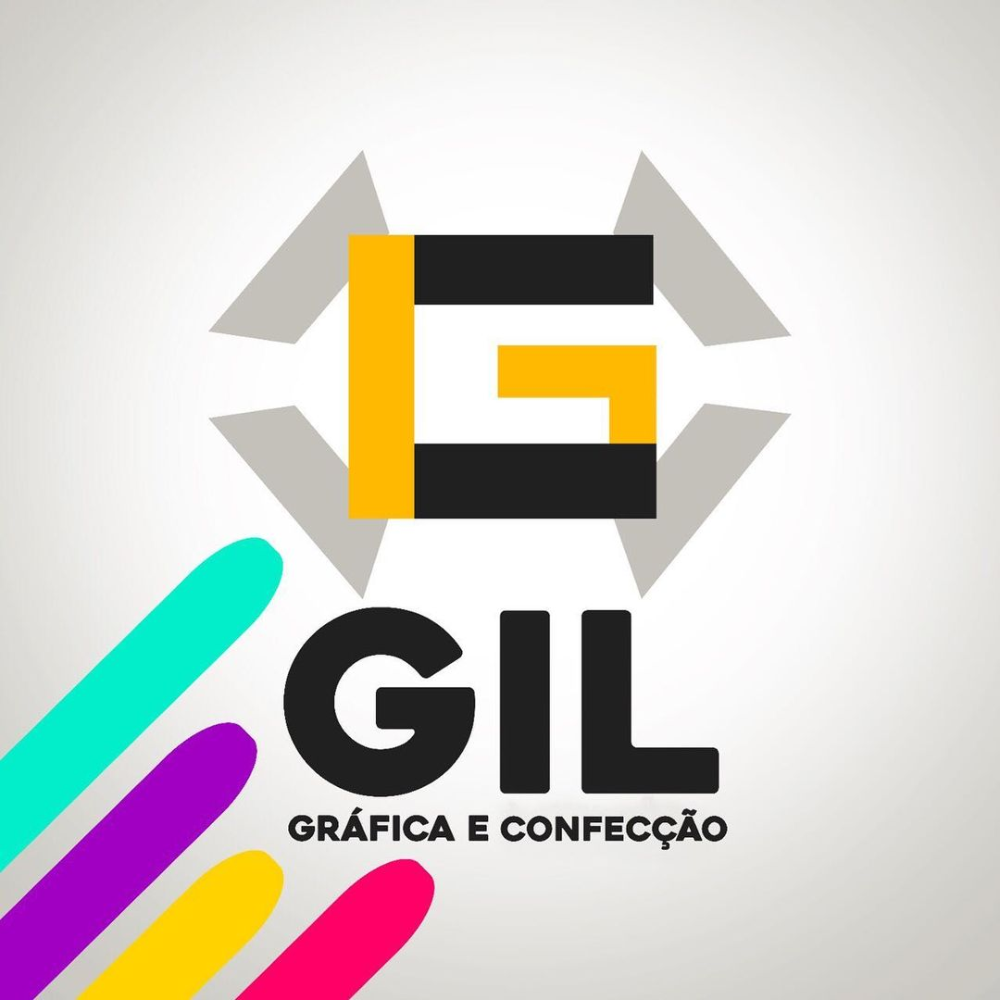

Colaboração em projetos acadêmicos, auxiliando em pesquisas e desenvolvimento de soluções tecnológicas para a comunidade acadêmica. (agosto de 2024 - presente)
Gerenciamento de projetos back-end, atuando na coordenação de equipes e desenvolvimento de APIs REST para clientes de diversos setores. Responsável por assegurar a qualidade e eficiência das soluções implementadas. (maio de 2024 - presente)
Desenvolvimento de APIs RESTful e integração de serviços para atender às necessidades de clientes. Atuei na criação de funcionalidades de backend utilizando Python e Node.js. (setembro de 2023 - maio de 2024)
Colaboração em projetos de desenvolvimento de sistemas backend, utilizando práticas de conteinerização com Docker para otimizar o ambiente de desenvolvimento. Trabalhei com APIs e manutenção de sistemas existentes. (outubro de 2022 - fevereiro de 2023)
Apoio em projetos de artes gráficas, contribuindo com tarefas de suporte técnico e aprendendo sobre os processos de desenvolvimento em um ambiente profissional. (agosto de 2021 - dezembro de 2021)
© 2024 Artur Jardel. Todos os direitos reservados.